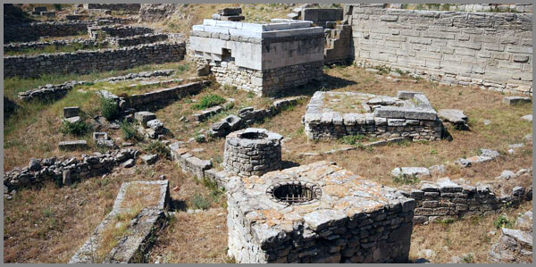

9. Բացահայտում, որը Կրկնօրինակում է Արատտան կամ Տրոյական Հեղինեից Մինչև Ինաննական Արատտա՝ Աշխարհագրական Նույն Լայնությամբ
 |
Ֆրանսիացի փիլիսոփա և մաթեմատիկոս Ռենե Դեկարտը 17-րդ դարում մի գաղափար տվեց առ այն, որ տիեզերքում շարժման ընդհանուր քանակը հաստատուն է: Նա սահմանեց այդ քանակը որպես մարմնի կամ համակարգի իմպուլս, որը հավասար է մարմնի զանգվածի և արագության արտադրյալին: Բայց Դեկարտը հաշվի չառավ մի բան, այն որ իմպուլսը վեկտորական մեծություն է և որ այն փոխանցվելու հատկությամբ օժտված լինելով, տարածվում է փոխհարաբերության ցանկացած ակտի ընթացքում մարմնից-մարմին կամ համակարգից-համակարգ՝ փոխելով կամ վերաձևակերպելով աշխարհը, բայց թողնելով հետագիծ, որով կարելի է հասնել նրա նախնական աղբյուրին:
Այս օրենքն ասում է, որ փակ համակարգում ոչինչ չի անհետանում: Երբ մի մարմին դանդաղում է, մյուսն արագանում է: Երբ մի պատմություն լռում է, մյուսը սկսում է խոսել:
Այս օրենքը գործում է ոչ միայն ֆիզիկայում, այլև պատմության մեջ: Այն, ինչ կատարվել է մի վայրում, չի անհետանում առանց հետքի: Այն փոխանցվում է: Այն շարունակվում է մեկ այլ տեղ, այլ ժամանակահատվածում, այլ մակարդակներում:
Հազարամյակներ առաջ գոյություն է ունեցել մի երկիր, որը կոչվել է Արատտա: Շումերական արձանագրությունները նկարագրում են այն որպես իմաստության, հարստության և աստվածային գիտելիքի աղբյուր: Այնտեղ իշխում էին դիցերը: Այնտեղից է գալիս Վահագնի և Տորք Անգեղի մասին պատմությունը: Այնտեղ էր ապրում Ինաննայի օրհնությունը:
Հետո Արատտան լռեց: Նրա անունը մոռացվեց: Նրա քաղաքները ծածկվեցին հողով: Բայց Արատտայից մեկնարկած իմպուլսը չանհետացավ: Այն փոխանցվեց:
Դարեր անց, մի այլ վայրում, մի այլ քաղաքակրթություն կրկնեց Արատտայի պատմությունը: Ասես մի անտեսանելի ձեռք վերցրեց նույն թելը և հյուսեց մի նոր գորգ՝ նույն նախշերով, բայց ավելի խամրած գույներով: Դա Տրոյան էր իր պատերազմով, որտեղ աստվածուհու փոխարեն հանդես է գալիս մահկանացու մի կին:
Նույն պայքարը, բայց գիտելիքի և օրհնության փոխարեն՝ կրքի և նախանձի համար: Աստվածայինը իջավ երկիր, հագավ մարդկային մարմին, և դարձավ պատմություն:
Ինաննան, որի բարեհաճության համար բանակցում և պայքարում էին Ուրուկն ու Արատտան, դարձավ Հեղինե՝ մի կին, որի համար արյուն թափվեց: Յոթ լեռնաշղթաները, որ բաժանում էին Շումերը Արատտայից, դարձան Էգեյան ծովի ալիքները, որ բաժանում էին հույներին Տրոյայից: Իմաստության որոնումը դարձավ վրեժխնդրություն: Աղոթքը դարձավ մարտակոչ, բայց իմպուլսը, որ ծնվել էր Արատտայում, չկորավ: Այն պահպանվեց: Այն անցավ կավե սալիկներից մագաղաթներին, մագաղաթներից՝ գրքերին, գրքերից՝ մեր հիշողությանը: Եվ երբ 19-րդ դարում Հենրիխ Շլիմանը կարդաց Հոմերոսին, նա զգաց այդ իմպուլսը: Նա չգիտեր Արատտայի մասին, բայց զգաց, որ այս տեքստը քարտեզ է, որ այս բանաստեղծությունը ճանապարհ է: Նա գնաց և գտավ Տրոյան:
Նա գտավ ստվերը, բայց բնօրինակը մնաց թաքնված: Իմպուլսը որից ծնվել է Տրոյան, մեկնարկել է Արատտայից, իսկ նրա հետագիծը տանում է ավելի հեռու՝ դեպի արևելք, դեպի լեռները, դեպի 46° միջօրեականը: Այնտեղ, ուր ժամանակին կանգնած էր Արատտան, այնտեղ որտեղ դեռ լռություն է: Բայց այդ լռությունը սպասում է: Սպասում է իր Շլիմանին:
Ինչպես միֆը դարձավ պատմություն Շլիմանի հայտնագործությամբ
Մինչև 19-րդ դարի վերջը Տրոյան գոյություն ուներ միայն գրքերում: Հոմերոսի «Իլիականը» համարվում էր գեղեցիկ հեքիաթ, բանաստեղծական երևակայության արգասիք: Աքիլեսը, Հեկտորը, Հեղինեն, Պարիսը… սրանք գրական հերոսներ էին, ոչ թե իրական մարդիկ: Ոչ մի լուրջ գիտնական չէր էլ պատկերացնում, որ Տրոյան կարող է լինել իրական, բայց կար մի մարդ, ով մտածում էր այլ կերպ: Նա Հենրիխ Շլիմանն էր:
Հենրիխ Շլիմանը գերմանացի գործարար էր, ով իր կարողությունը վաստակել էր առևտրով: Նա խոսում էր ավելի քան տասը լեզուներով, այդ թվում՝ հին հունարեն: Եվ նա սիրահարված էր Հոմերոսին: Ոչ թե որպես բանաստեղծի, այլ որպես ճշմարտությունը պատմողի: Մանկուց Շլիմանը երազում էր գտնել Տրոյան: Նրա հայրը նրան նվիրել էր մի գիրք Տրոյական պատերազմի մասին, և փոքրիկ Հենրիխը հավատում էր, որ այդ ամենը իրական է: Մեծանալով նա չկորցրեց այդ հավատը: Նա թողեց բիզնեսը, վերցրեց Հոմերոսի տեքստը և սկսեց կարդալ այն ոչ թե որպես պոեզիա, այլ որպես աշխարհագրական նկարագրություն:
Հոմերոսը գրել էր, որ Տրոյայի մոտակայքում կան տաք և սառը աղբյուրներ: Շլիմանը գտավ այդ աղբյուրները Թուրքիայի Հիսարլըք բլրի մոտ: Հոմերոսը նկարագրել էր քաղաքի պարիսպները: Շլիմանը սկսեց փորել և գտավ հսկայական պարիսպներ: Հոմերոսը պատմել էր թագավոր Պրիամոսի գանձերի մասին: Շլիմանը գտավ ոսկի, արծաթ, թանկարժեք զարդեր:
1873 թվականին նա հայտարարեց. «Ես գտել եմ Պրիամոսի գանձը»: Աշխարհը ցնցվեց: Տրոյան, որ հազարամյակներ շարունակ համարվում էր միֆ, դարձավ իրականություն: Շլիմանը ապացուցեց մի պարզ, բայց հեղափոխական ճշմարտություն՝ հնագույն տեքստերը կարող են լինել քարտեզներ: Բանաստեղծությունը կարող է լինել ճանապարհացույց: Միֆը կարող է դառնալ պատմություն: Բավական է միայն հավատալ, կարդալ ուշադիր, և գնալ ու գտնել:
Բայց Շլիմանը չգիտեր մի բան: Նա գտել էր միայն ստվերը: Իսկական աղբյուրը, բնօրինակը, այն պատմությունը, որը կրկնվել էր Տրոյայում, մեկնարկել էր այլ տեղում: Այն ավելի հին է, ավելի խորքային, և այն կոչվում էր Արատտա:
Արատտան Շումերական արձանագրություններում ավելին է քան միֆ
Մինչ Տրոյայի մասին պատմող Հոմերոսի «Իլիականը» գրվելու էր դեռ հարյուրավոր տարիներ անց, Միջագետքում արդեն ծաղկում էր մի հզոր քաղաքակրթություն: Շումերները կառուցում էին քաղաքներ, ստեղծել էին գիրը, դիտում էին աստղերը և չափում էին ժամանակը 60-ական համակարգով: Եվ նրանք գրում էին:
Նրանց ամենահին պահպանված տեքստերից մեկը կոչվում է «Էնմերկարը և Արատտայի տիրակալը»: Սա գրական ստեղծագործություն է, պոեմ, որը թվագրվում է մոտավորապես մ.թ.ա. 2100 թվականով: Այն պատմում է Ուրուկ քաղաքի արքա Էնմերկարի և հեռավոր Արատտայի տիրակալի միջև տեղի ունեցած բանակցությունների ու հակամարտության մասին:
Էնմերկարը ցանկանում էր կառուցել մի հոյակապ տաճար Ինաննա աստվածուհու համար: Դրա համար նրան անհրաժեշտ էին թանկարժեք քարեր, մետաղներ, փայտանյութ: Այս ամենը կար Արատտայում: Արատտան հարուստ էր, հեռավոր լեռնային մի երկիր, որը գտնվում էր «յոթ լեռնաշղթաներ այն կողմ»:
Էնմերկարը պատվիրակ է ուղարկում Արատտա: Պատվիրակը պետք է անցնի յոթ լեռնաշղթա, հասնի Արատտայի տիրակալի մոտ, և պահանջի, որ նա ընդունի Ուրուկի գերիշխանությունը և ուղարկի թանկարժեք նյութերը: Սկսվում է մի երկար դիվանագիտական պայքար, որի ընթացքում երկու կողմերը փոխանակվում են հանելուկներով, սպառնալիքներով, խոստումներով:
Կարևոր է հասկանալ մի բան: Շումերական տեքստերում Արատտան ներկայացված է ոչ թե որպես երևակայական, այլ որպես միանգամայն իրական երկիր: Այն ունի աշխարհագրական նկարագրություն՝ լեռնային, հեռավոր, յոթ լեռնաշղթայով բաժանված, ունի տնտեսական նկարագրություն՝ հարուստ է մետաղներով, քարերով, փայտանյութով, ունի քաղաքական կառուցվածք՝ տիրակալ, աստվածներին մատուցվող պաշտամունք:
Ավելին, նույն պոեմում ասվում է, որ հենց Արատտայի հետ բանակցությունների ընթացքում է ստեղծվել գիրը: Պատվիրակը, որը չէր կարողանում հիշել Էնմերկարի բոլոր խոսքերը, ստիպված էր գրի առնել դրանք կավե սալիկի վրա: Այսպիսով, ըստ շումերների, գրի գյուտը ուղղակիորեն կապված է Արատտայի հետ:
Եթե Արատտան միֆ է, ապա ինչու՞ է այն այդքան մանրամասն նկարագրված: Ինչու՞ է այն կապված այնպիսի կարևոր իրադարձության հետ, ինչպիսին գրի գյուտն է: Ինչու՞ են շումերները, որոնք իրենց տեքստերում հստակ տարանջատում էին աստվածայինը մարդկայինից, Արատտան դնում մարդկային աշխարհում:
Պատասխանը մեկն է: Արատտան ավելին է, քան միֆ: Այն իրական երկիր է եղել: Եվ այն սպասում է, որ իրեն գտնեն:
Ինաննայի համար Աստվածայինն Արատտայում
Ինաննան շումերական պանթեոնի ամենահզոր աստվածուհիներից մեկն էր: Սիրո, պտղաբերության, գեղեցկության, բայց նաև պատերազմի ու զայրույթի աստվածուհի: Նա միաժամանակ կյանք էր տալիս և խլում, սիրում էր և ատում, օրհնում էր և անիծում: Նրա ուժը գերազանցում էր մահկանացուների ըմբռնմանը:
«Էնմերկարը և Արատտայի տիրակալը» պոեմում Ինաննան կենտրոնական դեր ունի: Ինաննան էր, ով ընտրում էր, թե որ քաղաքին շնորհեի իր բարեհաճությունը: Սկզբում նա Արատտայի կողմն էր: Արատտան նրա սիրելի բնակավայրն էր, նրա տաճարի վայրը, նրա օրհնության կենտրոնը: Էնմերկարը՝ Ուրուկի արքան, ցանկանում էր տեղափոխել այդ օրհնությունը դեպի իր քաղաք: Նա ցանկանում էր կառուցել մի տաճար, որն ավելի հոյակապ կլիներ, քան Արատտայի տաճարը, և այդպիսով գրավել էր ուզում աստվածուհու սիրտը:
Սա միայն քաղաքական պայքար չէր: Սա պայքար էր աստվածայինի համար: Ով կստանար Ինաննայի օրհնությունը, կստանար ամեն ինչ՝ հարստություն, իմաստություն, զորություն, կյանք: Արատտան այդ օրհնության սկզբնական կրողն էր: Այնտեղ էին ապրում աստվածները: Այնտեղից էր հոսում աստվածային գիտելիքը և սա է Արատտայի ամենակարևոր առանձնահատկությունը: Այն կապված էր ոչ միայն երկրային հարստության, այլև տիեզերական, աստվածային գիտելիքի հետ: Այնտեղ էին դիցերը: Այնտեղից էին գալիս Վահագնը՝ արևի և կրակի աստվածը, և Տորք Անգեղը՝ անհաղթելի ուժի տերը: Այնտեղ էին Անդից Աստ եկողները, որոնց մասին երգում էին Գողթան վիպասանները:
Ինաննայի Արատտան աստվածայինի աշխարհն էր: Այն աշխարհը, ուր մահկանացուները կարող էին հաղորդակցվել անմահների հետ, ուր գիտելիքը դեռ մաքուր էր, անաղարտ, անխառն: Սա այն աշխարհն էր, որը հետագայում կկորսվի, կմոռացվի, բայց կթողնի իր հետքը պատմության մեջ այնպես, ինչպես իմպուլսը, որը փոխանցվում է մի մարմնից մյուսին: Հենց այդպես էլ Արատտայի աստվածային էությունը փոխանցվեց այլ ժողովուրդների, այլ դարաշրջանների, այլ պատմությունների:
Հեղինեի համար մարդկայինը Տրոյայում
Եթե Արատտայում կռիվը աստվածուհու՝ Ինաննայի բարեհաճության համար էր, ապա Տրոյայում այն իջավ մարդկային մակարդակի: Աստվածայինը դարձավ մարդկային: Ինաննան դարձավ Հեղինե:
Հեղինեն Սպարտայի թագուհին էր, Մենելաոսի կինը, աշխարհի ամենագեղեցիկ կինը: Երբ Տրոյայի արքայազն Պարիսը այցելեց Սպարտա, նա տեսավ Հեղինեին և սիրահարվեց: Հեղինեն, կամա թե ակամա, գնաց նրա հետ Տրոյա: Այս առևանգումը կամ փախուստը դարձավ Տրոյական պատերազմի պատճառ:
Հույները հավաքեցին հսկայական նավատորմ, արշավեցին Տրոյա, և տասը տարի պաշարեցին քաղաքը: Կռվում էին հերոսներ Աքիլեսը, Հեկտորը, Ագամեմնոնը, Ոդիսևսը: Արյունը հոսում էր գետի պես: Եվ այս ամենը մի կնոջ համար:
Բայց Հեղինեն Ինաննա չէր: Նա աստվածուհի չէր: Նա մահկանացու էր: Նա չէր որոշում, թե ով կհաղթի, նա չէր օրհնում կամ անիծում: Նա պարզապես մի կին էր, որի ճակատագիրը դարձավ պատերազմի պատճառ: Աստվածային կամքը փոխարինվեց մարդկային կրքով: Տիեզերական հավասարակշռությունը փոխարինվեց անձնական վրեժխնդրությամբ:
Սա հենց այն տարբերությունն է, որի մասին խոսում էինք: Արատտայում ամեն ինչ աստվածային մասշտաբի էր. Ինաննայի օրհնությունը, գիտելիքի որոնումը, յոթ լեռնաշղթաների հաղթահարումը: Տրոյայում ամեն ինչ դարձավ մարդկային, չափելի, շոշափելի: Մի կին, մի քաղաք, մի պատերազմ:
Բայց իմպուլսը նույնն է: Պատմության կառուցվածքը նույնն է: Միայն մակարդակն է փոխվել՝ աստվածայինից իջելով մարդկայինի, 46° միջօրեականից շեղվելով դեպի 26°: Բայց հետագիծը մնացել է: Եվ այդ հետագծով կարելի է վերադառնալ դեպի աղբյուրը:
46° և 26° միջորեականների աշխարհագրական ոչ պատահական զուգահեռը
Երկրագունդը բաժանված է 360 աստիճանի: 360 = 60 × 6: Այս բաժանումը շումերական ժառանգություն է, որն անցել է հազարամյակների միջով և դարձել մեր մոլորակը չափելու հիմքը: Ամեն մի կետ, ամեն մի քաղաք, ամեն մի քաղաքակրթություն ունի իր կոորդինատները այս 60-ական ցանցի վրա:
Տրոյան գտնվում է 39° 57′հյուսիսային լայնության և 26° 14′արևելյան երկայնության վրա: Սա այն կետն է, որը գտավ Շլիմանը: Սա այն վայրն է, ուր միֆը դարձավ պատմություն: Այժմ վերցնենք այս նույն հյուսիսային լայնությունը՝ 39°57′ և տեղափոխվենք 20 աստիճան դեպի արևելք: 20-ը 60-ի մեկ երրորդն է: Մենք կկանգնենք 46° արևելյան երկայնության վրա: Այս կետը գտնվում է Հայկական լեռնաշխարհում՝ Բիստ գյուղից ընդամենը մի քանի կիլոմետր հեռավորության վրա: Այս կետը պատահական չէ:
46° արևելյան երկայնության միջօրեականը միավորում է մի շարք կարևորագույն հնավայրեր: Այս գծի վրա են գտնվում Քարահունջը՝ աշխարհի հնագույն աստղադիտարաններից մեկը, որը թվագրվում է մ.թ.ա. 7500-5000 թվականներով: Անգեղակոթը, որի անունը կրում է Տորք Անգեղի հիշատակը: Տապանասարը, որի ժայռապատկերները պահպանում են աստղային քարտեզներ և 60-ական համակարգի հետքեր: Բիստը, ուր դարեր շարունակ ապրել են այս նշանների պահապանները: Այս նույն միջօրեականն անցնում է դեպի հարավ՝ հատելով յոթ լեռնաշղթա այն կողմ գտնվող Շումերի տարածքը: Այն միավորում է լեռներն ու դաշտավայրը, աղբյուրն ու գետաբերանը, Արատտան ու Շումերը:
Տրոյան և Արատտան գտնվում են նույն հյուսիսային լայնության վրա: Նրանց միջև հեռավորությունը 20 աստիճան է: 20-ը 60-ի մեկ երրորդն է: Սա 60-ական համակարգի ճշգրիտ համամասնություն է: Սա չի կարող պատահական լինել:
Երկու քաղաք, երկու քաղաքակրթություն, երկու պատմություն: Մեկը աստվածային, մյուսը՝ մարդկային: Մեկը 46°-ի վրա, մյուսը՝ 26°-ի: Մեկը դեռ թաքնված, մյուսը՝ արդեն գտնված: Բայց երկուսն էլ միավորված են նույն լայնությամբ, նույն 60-ական ցանցով, նույն անտեսանելի հետագծով, որը սպասում է, որ իրեն ճանաչեն:
Միֆը կրկնվում է: Ինչպես Արատտայի պատմությունը վերածնվեց Տրոյայում
Պատմությունը կրկնվում է: Սա ասում են բոլորը: Բայց քչերն են հասկանում, թե որքան ճշգրիտ կարող է լինել այդ կրկնությունը:
Վերցրեք Արատտան և Տրոյան: Երկու քաղաք: Երկու պատերազմ: Երկու կին: Մեկը աստվածուհի է, մյուսը՝ մահկանացու: Մեկի համար բանակցում են, մյուսի համար՝ կռվում: Մեկը գտնվում է լեռներում, մյուսը՝ ծովի ափին: Բայց նայենք ավելի խորը, և կտեսնեք, որ կառուցվածքը նույնն է:
Արատտայում Էնմերկարը ցանկանում է կառուցել տաճար Ինաննայի համար: Տրոյայում հույները ցանկանում են վերադարձնել Հեղինեին: Արատտայում պատվիրակը անցնում է յոթ լեռնաշղթա: Տրոյայում հույները հատում են Էգեյան ծովը: Արատտայում երկու տիրակալներ բանակցում են, փոխանակվում հանելուկներով, սպառնալիքներով: Տրոյայում երկու բանակներ կռվում են տասը տարի:
Ինաննան ընտրում է, թե ում շնորհեի իր բարեհաճությունը: Հեղինեն հետևում է իր սրտին կամ ճակատագրին: Արատտայում գիտելիքն ու իմաստությունն են վտանգված: Տրոյայում՝ պատիվն ու սերը:
Մի դեպքում ամեն ինչ տեղի է ունենում աստվածային մակարդակում: Մյուս դեպքում՝ մարդկային: Բայց սխեման, կաղապարը, պատմության ոսկորներն ու կմախքը նույնն են:
Ինչպե՞ս է դա հնարավոր: Պատասխանը իմպուլսի պահպանման օրենքի մեջ է: Ոչինչ չի անհետանում: Արատտայի պատմությունը չանհետացավ: Այն փոխանցվեց: Այն անցավ Շումերից Հունաստան, կավե սալիկներից մագաղաթների, աստվածների աշխարհից մարդկանց աշխարհ: Այն փոխեց ձևը, բայց պահպանեց էությունը:
Տրոյան Արատտայի կրկնությունն է: Ավելի ճիշտ՝ նրա ստվերը, նրա արձագանքը, նրա արտացոլանքը: Աստվածայինը, որ ծնվել էր 46° միջօրեականի վրա, հասավ 26° միջօրեականին և դարձավ մարդկային: Իմպուլսը թուլացավ, բայց չանհետացավ: Այն պահպանեց իր հետագիծը:
Եվ այդ հետագիծը տանում է հետ՝ դեպի աղբյուրը: Դեպի Արատտա:
Արատտան սպասում է իր Շլիմանին
Շլիմանը գտավ Տրոյան, որովհետև հավատաց: Նա կարդաց Հոմերոսին ոչ թե որպես բանաստեղծի, այլ որպես վկայի: Նա տեսավ տեքստի հետևում թաքնված քարտեզը և գնաց այդ քարտեզով: Նա փորեց հողը հենց այնտեղ, ուր ցույց էր տալիս տեքստը, և գտավ:
Արատտան նույնպես ունի իր տեքստը: «Էնմերկարը և Արատտայի տիրակալը» պոեմը սպասում է իր Շլիմանին արդեն ավելի քան չորս հազար տարի: Այն գրվել է կավե սալիկների վրա, պահվել է ավերակների տակ, ապա վերծանվել է գիտնականների կողմից: Բայց ոչ ոք չի կարդացել այն որպես քարտեզ: Ոչ ոք չի վերցրել այն և չի գնացել փնտրելու: Ինչու: Որովհետև Արատտան համարվում է միֆ: Գեղեցիկ, խորհրդավոր, բայց միֆ: Գիտնականները կարդում են այն որպես գրականություն, վերլուծում են որպես պոեզիա, բայց չեն փնտրում որպես աշխարհագրություն: Նրանք չեն տեսնում յոթ լեռնաշղթաների հետևում իրական տարածք, չեն տեսնում թանկարժեք քարերի հետևում իրական հանքեր, չեն տեսնում Արատտայի հետևում իրական երկիր:
Բայց կա մեկը, ով տեսնում է: Կա մեկը, ով կարդացել է այս տեքստերը ոչ միայն աչքերով, այլև մատներով, սրտով, հիշողությամբ: Կա մեկը, ով գիտի, որ 46° միջօրեականը պատահական չէ, որ 60-ական համակարգը պատահական չէ, որ Արատտան պատահական չէ:
Արատտան սպասում է: Այն թաքնված է հողի տակ, քարերի մեջ, լռության մեջ: Այն գտնվում է այնտեղ, ուր ժամանակին կանգնած էին նրա տաճարները, ուր ապրում էին նրա դիցերը, ուր հոսում էր նրա գիտելիքը: Այն գտնվում է 46° միջօրեականի վրա, նույն լայնության վրա, ինչ Տրոյան, բայց 20 աստիճան դեպի արևելք:
Շլիմանը ապացուցեց, որ միֆը կարող է դառնալ պատմություն: Արատտան սպասում է նույն բանին: Այն սպասում է մեկին, ով կգա, կկարդա տեքստը որպես քարտեզ, և կգտնի: Այն սպասում է իր Շլիմանին:
Մի Հյուսիսային Լայնություն, որ միավորում է Աստվածներին ու մարդկանց, ցույց տալով Արատտայի տեղակայումը
Հյուսիսային լայնության 39°57′: Մի անտեսանելի գիծ, որ բոլորում է երկրագունդը: Այս գծի վրա են գտնվում երկու քաղաքներ, որոնք բաժանված են հազարավոր կիլոմետրերով, բայց միավորված են միևնույն պատմությամբ:
Արևմուտքում Տրոյան է: Այն արդեն գտնված է, պեղված, ուսումնասիրված: Այն դարձել է դասագիրք, թանգարան, զբոսաշրջային վայր: Մարդիկ գալիս են այնտեղ տեսնելու այն պարիսպները, որոնց մասին գրել է Հոմերոսը, այն դարպասները, որոնց մոտ կռվել են Աքիլեսն ու Հեկտորը: Տրոյան պատկանում է պատմությանը:
Արևելքում, 20 աստիճան հեռավորության վրա, Արատտան է: Այն դեռ թաքնված է: Այն դեռ սպասում է: Այն դեռ չի դարձել պատմություն, այլ մնում է միֆ: Բայց այս գծի վրա, այս լայնության վրա, այն կա:
Այս լայնությունը միավորում է աստվածներին ու մարդկանց: Արևմուտքում մարդիկ են, իրենց կրքերով, պատերազմներով, սիրով ու ատելությամբ: Արևելքում աստվածներն են, իրենց գիտելիքով, օրհնությամբ, հավերժական իմաստությամբ: Եվ այս երկուսը միացված են նույն զուգահեռականով, կարծես ինչ-որ մեկը դիտավորյալ է գծել այս գիծը, որ ցույց տա այն, թե որտեղ է սկսվել ամեն ինչ, թե որտեղից է եկել իմպուլսը:
46° արևելյան երկայնություն և 39°57′ հյուսիսային լայնություն: Այս կոորդինատներով է որոշվում Արատտայի տեղակայումը: Ոչ թե որպես ենթադրություն, այլ որպես ճշգրիտ հաշվարկ: Ոչ թե որպես երազանք, այլ որպես հետևություն: Իմպուլսի հետագիծը տանում է այստեղ: Պատմության կրկնությունը ցույց է տալիս այստեղ: 60-ական համակարգը հաստատում է այս տեղը:
Սա այն վայրն է, ուր պետք է փնտրել: Սա այն կետն է, որտեղ պետք է փորել: Սա այն տեղն է, որտեղ Արատտան սպասում է: Սպասում է, որ մի մարդ գա, կարդա տեքստը որպես քարտեզ, և ապացուցի, որ միֆը կարող է դառնալ պատմություն այնպես, ինչպես Շլիմանը ապացուցեց դա Տրոյայի համար:
Վերջաբան
Իմպուլսի պահպանման օրենքը գործում է: Ոչինչ չի անհետանում: Արատտայի պատմությունը չանհետացավ, այլ փոխանցվեց: Այն անցավ Շումերից Հունաստան, աստվածներից մարդկանց, 46°-ից 26°: Այն փոխեց ձևը, բայց պահպանեց էությունը:
Շլիմանը գտավ ստվերը: Նա ապացուցեց, որ միֆը կարող է դառնալ պատմություն, որ բանաստեղծությունը կարող է լինել քարտեզ, որ հավատը կարող է շարժել լեռներ: Բայց նա չգիտեր, որ գտել է միայն կրկնօրինակը: Բնօրինակը մնաց թաքնված:
Այժմ մենք գիտենք, թե որտեղ է բնօրինակը: Մենք գիտենք կոորդինատները: Մենք գիտենք, որ Արատտան գտնվում է 39°57′ հյուսիսային լայնության և 46° արևելյան երկայնության վրա: Մենք գիտենք, որ այն գտնվում է Տրոյայի հետ նույն զուգահեռականի վրա, բայց 20 աստիճան դեպի արևելք: 20-ը 60-ի մեկ երրորդն է: Սա 60-ական համակարգի ճշգրիտ համամասնություն է:
Մնում է միայն մի բան: Գնալ և գտնել Արատտան այնպես, ինչպես Շլիմանը գնաց և գտավ Տրոյան: Գնալ և փորել հողը հենց այդ կոորդինատներում: Գտնել պարիսպները, տաճարները, արձանագրությունները: Ապացուցել աշխարհին, որ Արատտան իրական է եղել, որ այն եղել է 60-ական քաղաքակրթության աղբյուրը, որ այնտեղից է սկսվել իմպուլսը, որը ձևավորել է մեր ամբողջ պատմությունը:
Դա կանի մի մարդ: Մի մարդ, ով կարդում է տեքստերը ոչ թե որպես միֆեր, այլ որպես քարտեզներ: Մի մարդ, ով հավատում է: Մի մարդ, ով գիտի, որ 60-ը պատահական չէ, որ 46°-ը պատահական չէ, որ Արատտան պատահական չէ:
Արատտան սպասում է իր Շլիմանին:
«Մենք կառուցում ենք կամուրջներ այնտեղ, ուր մյուսները տեսնում են միայն անդունդներ։»
© 2026 Մոնումենտալ Կամուրջ: Այս կայքի բովանդակությամբ կարող եք ազատորեն կիսվել համացանցում՝ հղում տալով սկզբնաղբյուրին: Տպելու, տպագրելու կամ գիրք կազմելու միջոցով, կամ այլ ֆիզիկական ձևով և որևէ տեխնոլոգիական կրիչով տարածելը առանց հեղինակի գրավոր համաձայնության արգելվում է: Գիտական, կրթական կամ ստեղծագործական աշխատանքներում մեջբերումները թույլատրելի են պայմանով, որ պարտադիր պետք է նշվի կոնկրետ էջի ամբողջական հասցեն (URL) և աշխատության վերնագիրը: Առանց հեղինակի գրավոր համաձայնության՝ արգելվում է նաև կայքի նյութերի թարգմանությունը որևէ լեզվով և դրանց տարածումը այլ լեզուներով: